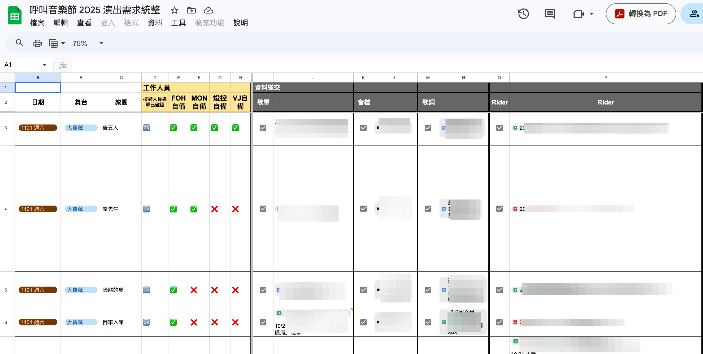

專案背景
呼叫音樂節為 2025 年執行的大型音樂節專案，工作範圍包含整合 40 組藝人、4 個舞台的演出需求，並與硬體舞台組、舞台經理組、後勤總務組、媒體宣傳公司與主辦單位協作。
我負責藝人與演出相關的行政統籌，在多個合作單位並行、主辦分工與權責尚未完全到位的情況下，主動建立資訊架構，確保各方能順利推進。
核心挑戰
在行政人力有限、分工與權責尚未完全清楚的情況下，快速建立可被多方使用的資訊架構，讓演出前置與現場執行能穩定推進。
- 40 組藝人需求分散，需快速統整與確認
- 主辦與協辦權責未明，需主動補位推進
- 多個合作單位並行，資訊需即時同步
我的角色
01
跨單位資訊窗口
擔任藝人、主辦、舞台、後勤與媒體宣傳之間的主要資訊窗口，整理需求並協助各單位判斷下一步。
02
資料架構建立
建立 Google Sheet 演出資料大表，集中管理藝人資料、舞台需求、後台資訊與宣傳需求，供多方即時查閱。
03
現場人力配置與推進
快速配置 4 位舞台後台經理，建立現場分工，並在活動期間支援後台管理與臨場溝通。
執行過程
-
01
建立演出資料大表在分工與權責尚未完全明確的情況下，主動建立 Google Sheet 資料大表，集中整理 40 組藝人的基本資料、演出需求、舞台資訊與後台需求，作為多方共用的資訊基礎。

演出需求統整大表：追蹤每組藝人的工作人員確認、資料繳交（歌單、音檔、歌詞、Rider）等項目 -
02
對齊各單位資訊需求依不同合作單位的需求重新整理資訊，協助硬體舞台組、舞台經理組、後勤總務組與媒體宣傳公司快速找到各自需要確認的內容，降低跨單位溝通成本。
-
03
配置後台管理人力在短時間內找到 4 位舞台後台經理，將現場執行工作分層處理，讓演出行政能從統籌層級掌握整體進度，同時確保每個舞台有獨立的執行對口。
-
04
支援媒體宣傳資料整合因具備廣告與媒體協作經驗，能快速理解宣傳公司的資料需求，協助整理藝人資訊與宣傳素材，減少跨單位來回確認的時間。
-
05
活動現場後台統籌活動期間負責後台統籌管理，支援藝人報到、識別證發放、後台動線規劃與臨場溝通，確保 40 組藝人團隊能順利完成演出。
專案成果
- 40 組藝人演出需求完成統整，支援 4 個舞台前置作業與現場執行
- 4 位後台經理完成配置，讓現場執行依舞台分工並能即時回報
- 多個合作單位資訊完成整合，演出行政與藝人接待流程順利完成
可轉移能力
複雜資訊整合能力
將分散的藝人、舞台與後台資訊建構成共用架構，可對應均一企業合作案中的跨組資訊整合與成效追蹤
權責模糊中的主動推進
分工不明時主動建立可執行流程，可對應企業合作初期需求未定義清楚時的推進與補位能力
現場多方關係協調
兼顧藝人、工作人員與合作單位的需求與感受，可對應企業志工活動與合作專案的現場執行與關係維繫